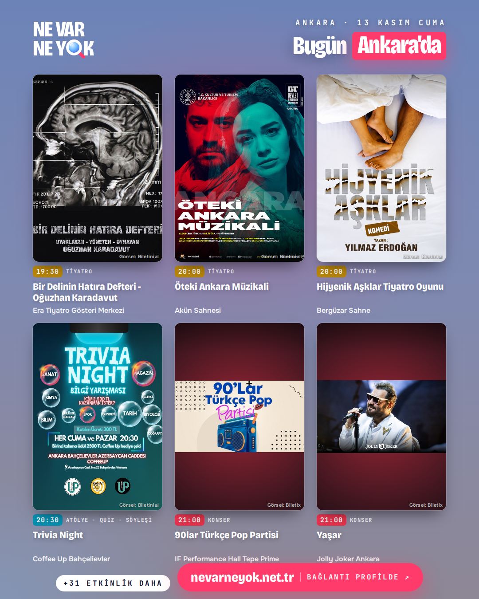
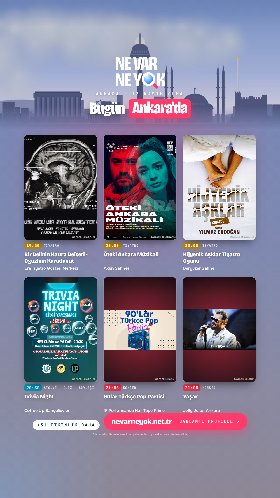
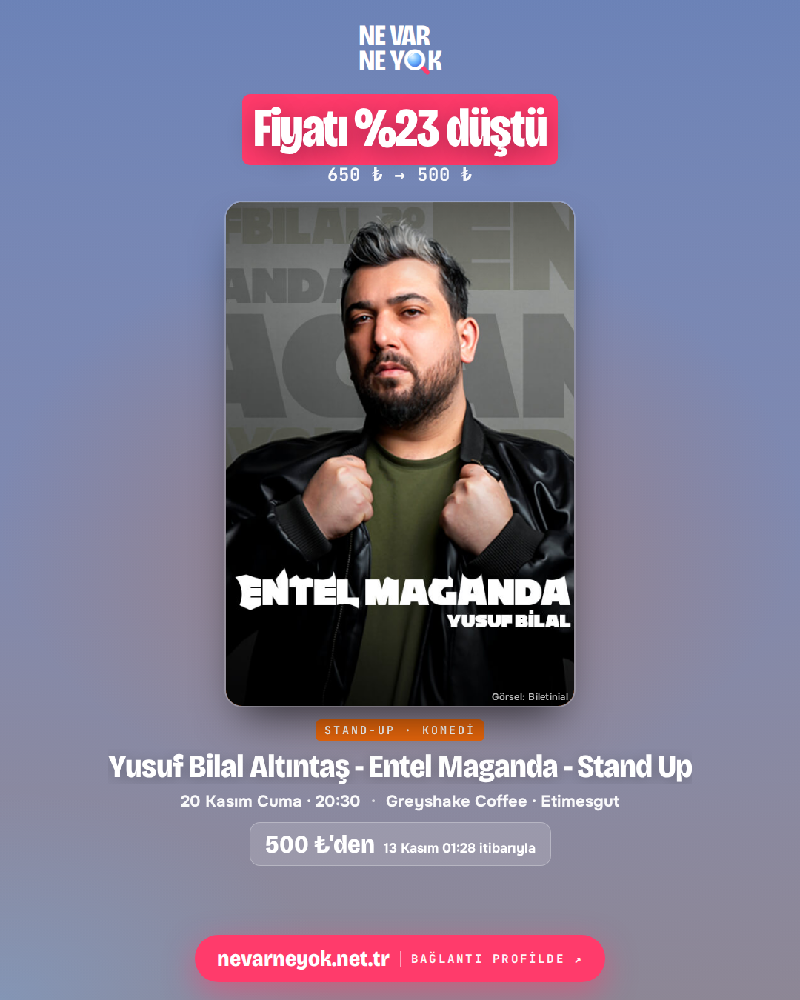
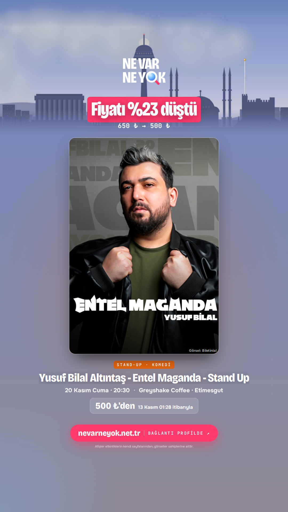
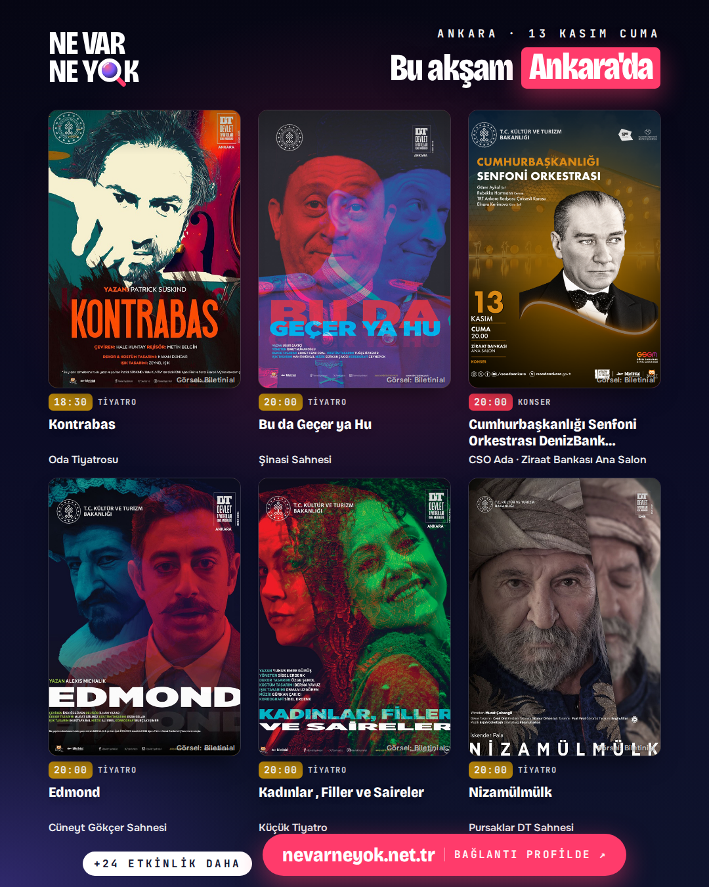
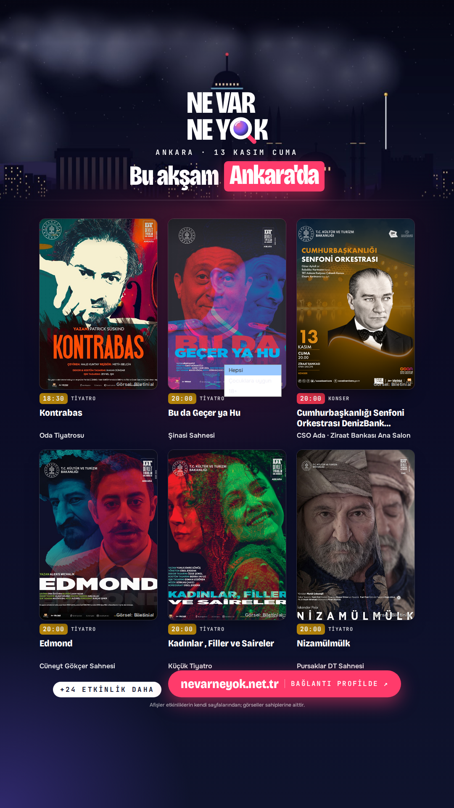
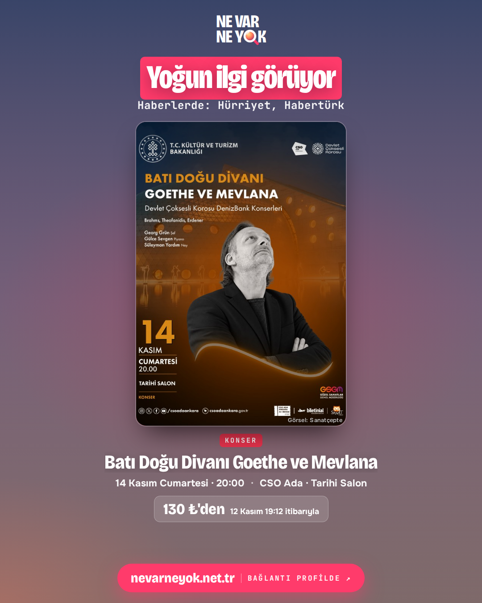
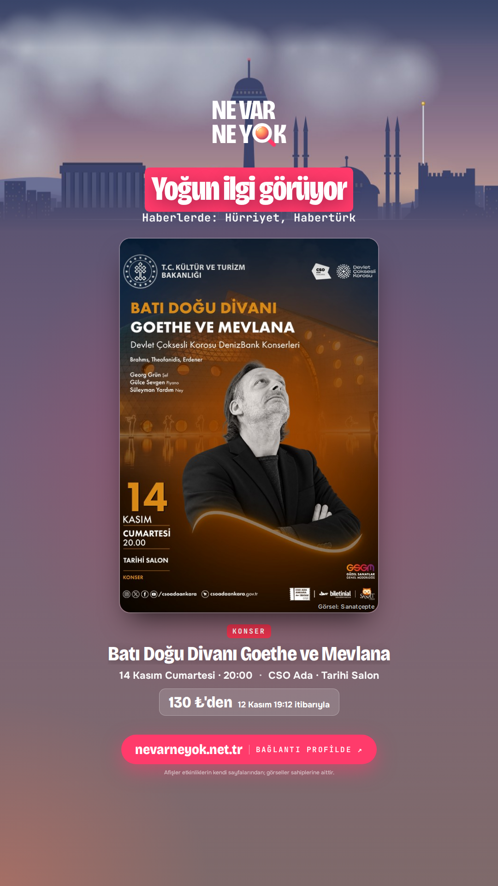

Bugünün paylaşımları
13 Kasım Cuma · sistem her sabah yeniler, Metricool kendiliğinden planlar
10:00 · Gönderi · Bugün Ankara'da

İndir10:01 · Hikâye · Bugün Ankara'da (hikâye)

İndir12:30 · Gönderi · Fiyatı %23 düştü: Yusuf Bilal Altıntaş - Entel Maganda - Stand Up

İndir12:31 · Hikâye · Fiyatı %23 düştü (hikâye)

İndir15:00 · Gönderi · Bu akşam Ankara'da

İndir15:01 · Hikâye · Bu akşam Ankara'da (hikâye)

İndir18:30 · Hikâye · Bu akşam hatırlatması (hikâye)
İndir19:00 · Gönderi · Yoğun ilgi görüyor: Batı Doğu Divanı Goethe ve Mevlana

İndir19:01 · Hikâye · Yoğun ilgi görüyor (hikâye)

İndir